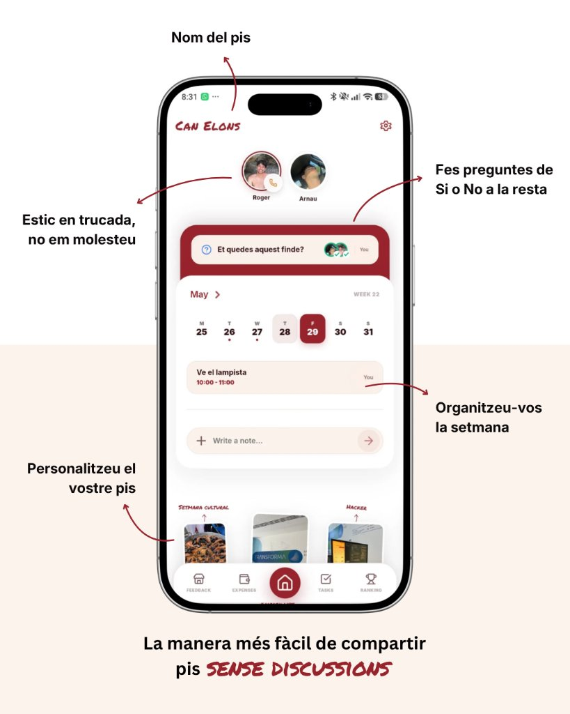
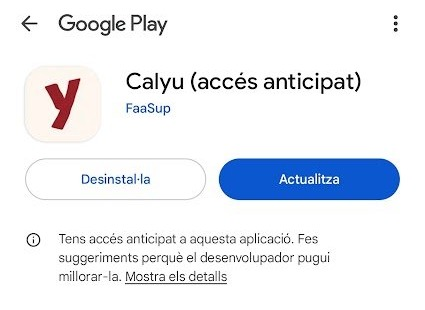

CALYU
Aplicació mòbil per gestionar despeses compartides, tasques domèstiques i convivència en pisos compartits sense friccions.
La manera més senzilla d'organitzar un pis compartit: despeses clares, tasques repartides i gamificació quotidiana.
Impulsada dins el programa d'emprenedoria Emprèn UPC, l'aplicació es va validar seguint la metodologia Lean Startup amb més de 100 primers usuaris. La proposta va ser seleccionada com a finalista per presentar-se al Demo Day Santander X Explorer UPC.
Organització diària sense friccions
Des de la pantalla d'inici cada company indica el seu estat de disponibilitat, llança preguntes ràpides de Sí o No i consulta el calendari setmanal del pis. Tot pensat per evitar malentesos quotidians en un sol cop d'ull.


Publicada en accés anticipat a Google Play
L'aplicació va arribar a producció en accés anticipat a Google Play Store per recollir feedback real de pisos d'estudiants i iterar directament sobre l'ús diari.
Desenvolupada des de la definició funcional i el disseny UX fins al llançament inicial, consolidant-se com a projecte finalista al Demo Day Santander X Explorer UPC.